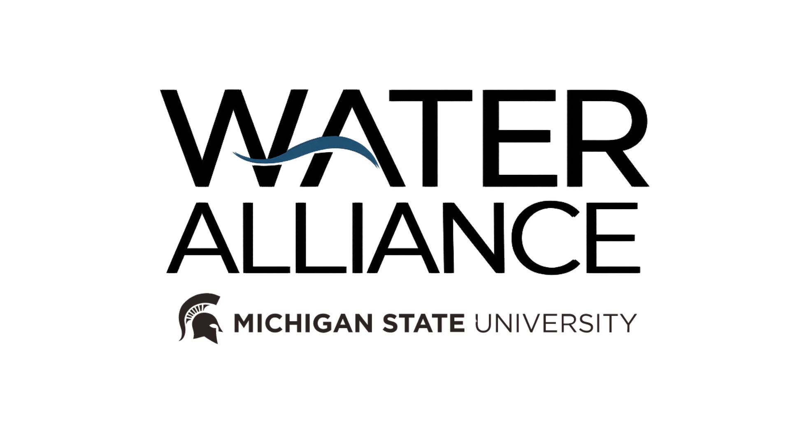

Videography · Editing · Education
A series of educational videos produced for the MSU Water Alliance, translating complex environmental issues into clear, accessible storytelling for a broad public audience. Created while working at 42pointSEVEN, the work spans two distinct topics — each demanding its own visual approach — with an emphasis on pacing, clarity, and communicating science without losing the viewer.
An explainer on PFAS contamination — what these chemicals are, how they enter water systems, and why they persist. Built for a general audience with no prior scientific background.
A plain-language guide to how residential septic systems work and why they matter for water quality. Designed to make a technical subject approachable and actionable for homeowners and community members.
Beyond filming and editing, I developed and presented a full creative rescope to the MSU Water Alliance — proposing a refreshed visual direction for the Septic Systems video and future productions in the series. The rescope covered color, typography, motion graphics, and branded assets, and was delivered directly to the client.
Logo

Color Palette
Typography
Name Cards
Intro Card
Outro Card